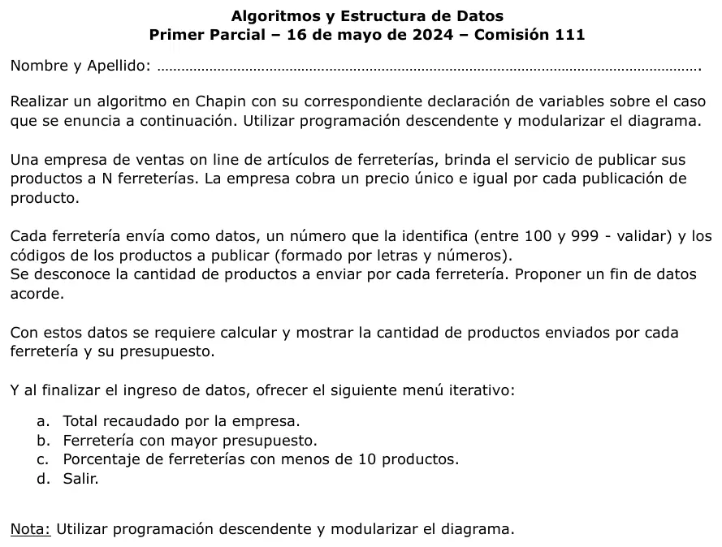

1° parcial, 16/05/2024 (Ferreterías)
1° parcial, 16/05/2024
Enunciado


Propuesta de respuesta
Respuesta no verificada. La propuso Luta Studios con inteligencia artificial y ningún docente la revisó. Puede tener errores.
La hoja pide el diagrama de Chapin. Va un diagrama por módulo, con su declaración de variables arriba, y primero el del programa principal. Si un diagrama no entra en la pantalla, tocalo para verlo completo. Después de los diagramas está el mismo algoritmo en Python, para que lo puedas probar.
Programa principal
Variables globales y datos iniciales
Carga de cada ferretería
Menú iterativo
El mismo algoritmo en Python
Es el programa que se probó, con las mismas sentencias y en el mismo orden que las cajas. Cada Leer del diagrama es un input, convertido a int o float según la declaración, y cada Mostrar es un print.
# Globales
# n, numFerre, cantProd, mayorNro, menosDe10: int
# precio, totalRecaudado, mayorPresu: float
def INICIO():
global n, precio, totalRecaudado, mayorPresu, mayorNro, menosDe10
n = int(input("Cantidad de ferreterías: "))
while n <= 0:
n = int(input("Tiene que ser mayor que 0: "))
precio = float(input("Precio por publicación: "))
while precio <= 0:
precio = float(input("Tiene que ser mayor que 0: "))
totalRecaudado = 0
mayorPresu = -1
mayorNro = 0
menosDe10 = 0
def LEER_FERRETERIA():
global numFerre
numFerre = int(input("Número de ferretería (100 a 999): "))
while numFerre < 100 or numFerre > 999:
numFerre = int(input("Número inválido, entre 100 y 999: "))
def LEER_PRODUCTOS():
# codProd: str
global cantProd
cantProd = 0
codProd = input("Código de producto (* para terminar): ")
while codProd != "*":
cantProd = cantProd + 1
codProd = input("Código de producto (* para terminar): ")
def PROCESAR_FERRETERIA():
# presu: float
global totalRecaudado, mayorPresu, mayorNro, menosDe10
presu = cantProd * precio
print("Ferretería", numFerre, "- productos:", cantProd, "- presupuesto:", presu)
totalRecaudado = totalRecaudado + presu
if presu > mayorPresu:
mayorPresu = presu
mayorNro = numFerre
if cantProd < 10:
menosDe10 = menosDe10 + 1
def CARGA():
# i: int
for i in range(n):
LEER_FERRETERIA()
LEER_PRODUCTOS()
PROCESAR_FERRETERIA()
def MENU():
# opcion: str
# porc: float
opcion = ""
while opcion != "d":
print("a. Total recaudado por la empresa")
print("b. Ferretería con mayor presupuesto")
print("c. Porcentaje de ferreterías con menos de 10 productos")
print("d. Salir")
opcion = input("Opción: ")
while opcion != "a" and opcion != "b" and opcion != "c" and opcion != "d":
opcion = input("Opción inválida, de a a d: ")
match opcion:
case "a":
print("Total recaudado:", totalRecaudado)
case "b":
print("Mayor presupuesto: ferretería", mayorNro, "con", mayorPresu)
case "c":
porc = menosDe10 / n * 100
print("Con menos de 10 productos:", porc, "%")
# Programa principal
INICIO()
CARGA()
MENU()Respuesta no verificada. Puede tener errores.
Se armó con la hoja del examen y la página del 1° parcial (fin de datos, contadores, acumuladores, máximo, porcentaje, validar y menú iterativo). El menú con match y la declaración en comentarios siguen las preguntas frecuentes de los TP 2024. El Chapin sigue la forma de las diapositivas del examen de Historia Clínica de 2019.
Quedó en duda: La hoja no dice de dónde salen N ni el precio por publicación. Acá se leen al principio, validados mayores que 0. El fin de datos es un *, porque los códigos son letras y números y un asterisco no puede ser un código real. El presupuesto de cada ferretería es la cantidad de productos por el precio único. El total recaudado es la suma de los presupuestos. Si dos ferreterías empatan en el mayor presupuesto, se muestra la primera. Las diapositivas de la materia no muestran en Chapin la lectura de datos ni la selección múltiple. Acá van como Leer y como Según, con una columna por caso.
¿Cómo te fue?
Marcá cada tema del examen.
- ChapinCómo viene el examen, en 1° parcial
- RepeticiónRepetición, en 1° parcial
- MenúMenú iterativo, en 1° parcial